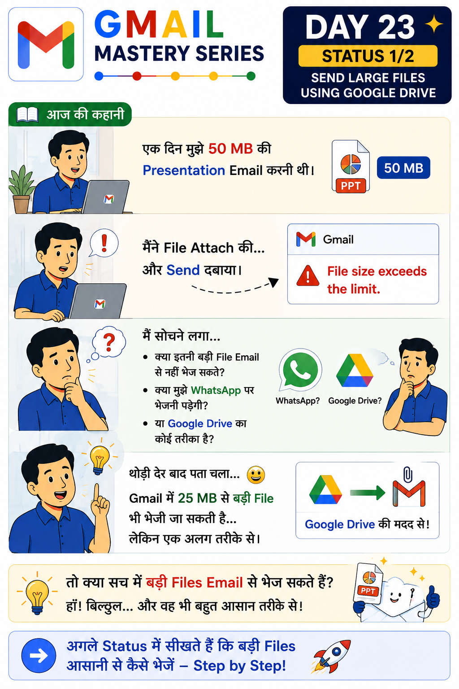

समझें कि 25 MB से बड़ी फाइल सामान्य रूप से अटैच क्यों नहीं होती
💡 25 MB अटैचमेंट सीमा का नियम (Gmail's ~25 MB Limit):
नीचे दिए गए मूल इन्फोग्राफिक (Day 23 Status 1) की कहानी देखें:
"एक दिन मुझे 50 MB की Presentation Email करनी थी। मैंने File Attach की... और Send दबाया। तुरंत एरर आया: 'File size exceeds the limit.'"
ऐसा क्यों होता है? Gmail में ईमेल प्रोटोकॉल के तकनीकी नियमों के कारण सामान्य अटैचमेंट (📎) की अधिकतम सीमा लगभग 25 MB निर्धारित है। जब कोई फाइल अटैच होती है, तो एनकोडिंग के कारण उसका आकार लगभग 33% बढ़ जाता है। इसलिए 25 MB से बड़ी किसी भी फाइल (जैसे बड़ी PPT, वीडियो या ZIP फोल्डर) को सीधे अटैच नहीं किया जा सकता।

🔍 पूरा बड़ा देखने के लिए क्लिक करें🎯 आपका प्रैक्टिकल कार्य (Hands-on Task):
- 1. Gmail Compose खोलें: Gmail में + Compose पर क्लिक करें।
- 2. सामान्य अटैचमेंट आइकन देखें: नीचे टूलबार में बने पेपरक्लिप (📎 Attach files) आइकन को देखें।
- 3. सीमा का नियम याद रखें: अभ्यास के लिए आपको कोई भारी फाइल बनाने की आवश्यकता नहीं है—बस यह सिद्धांत याद रखें कि 25 MB से छोटी फाइलें ही सीधे 📎 से जुड़ती हैं, और 25 MB से बड़ी फाइलों के लिए हमें Google Drive की मदद लेनी होती है।
✅ अपेक्षित परिणाम (Expected Result):
आपको स्पष्ट समझ आ जाएगी कि भारी फाइलों के लिए सामान्य 📎 अटैचमेंट क्यों विफल होता है और इसके समाधान के लिए Google Drive क्यों आवश्यक है।